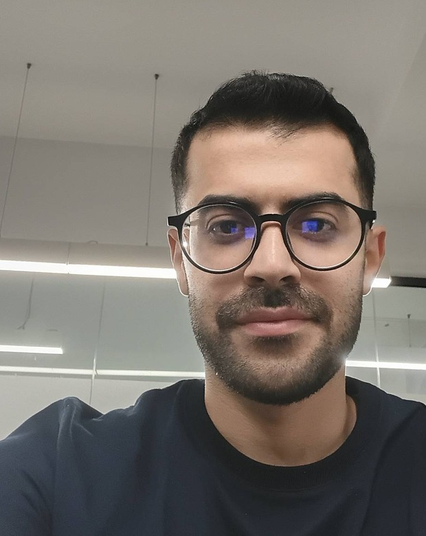
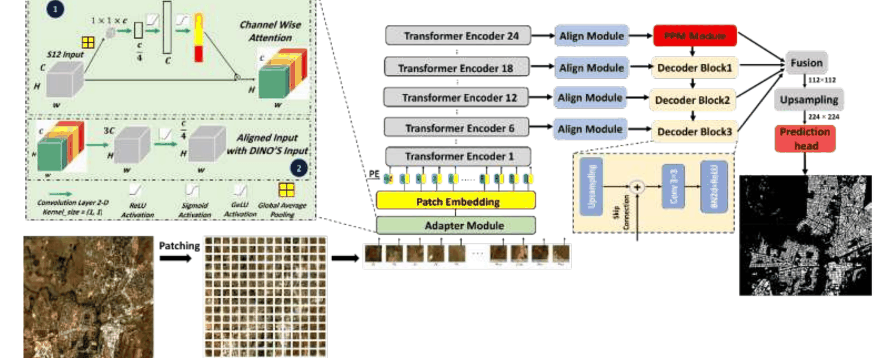
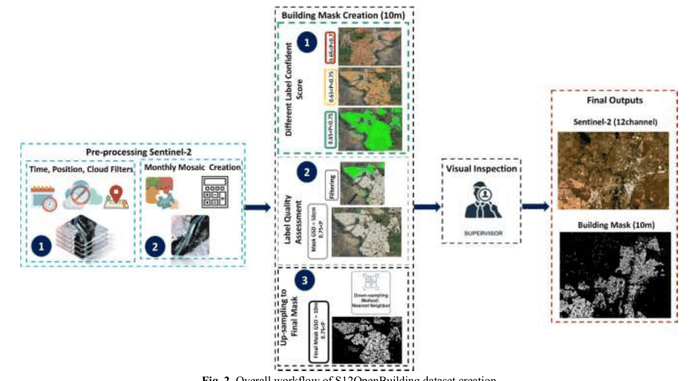
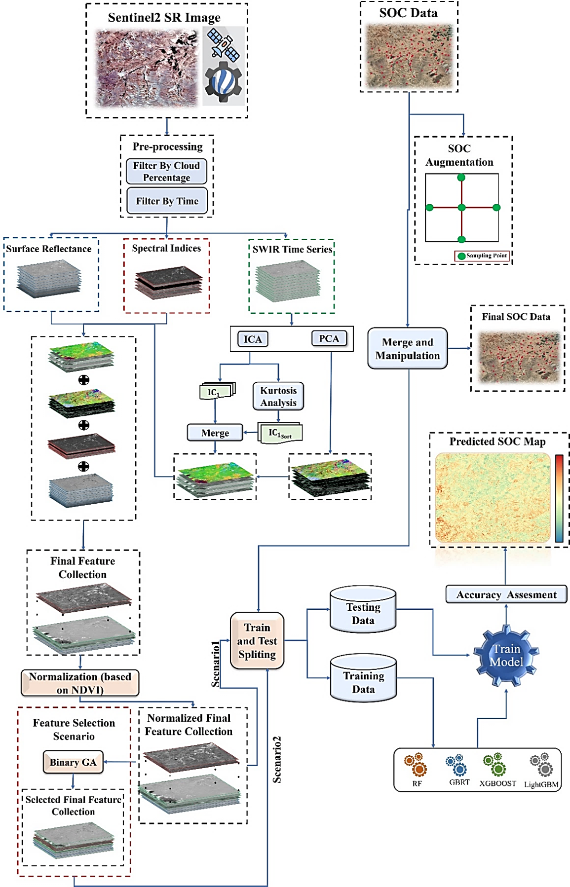
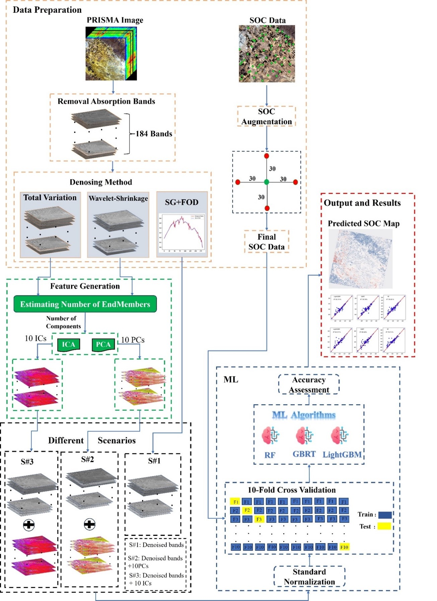
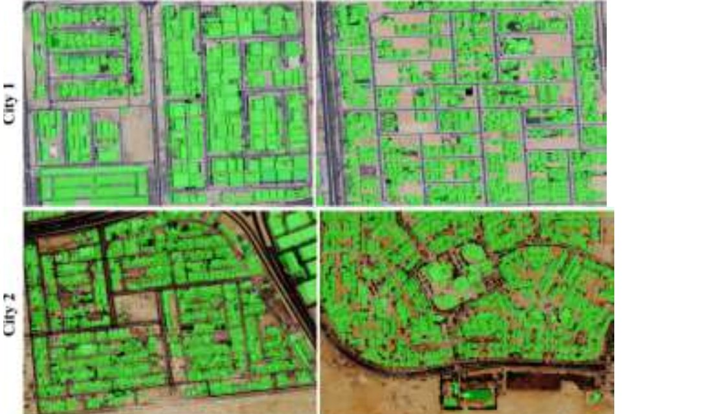

Remote sensing researcher, working on foundation models for Earth observation
I'm a remote sensing engineer working at the intersection of deep learning, computer vision, and satellite imagery. I hold an MSc in Remote Sensing from the University of Tehran (2024, ranked 1st), and I currently develop deep-learning pipelines for global-scale Earth observation. My recent work adapts large vision foundation models to multispectral satellite data through parameter-efficient fine-tuning — most recently for mapping building footprints worldwide from freely available Sentinel-2 imagery. I'm looking to pursue a PhD extending this direction toward more general, scalable geospatial AI.

What I've been working on, and what I want to work on next.
"S12OpenBuilding: Global Building Footprint Mapping via Efficient Adaptation of a DINOv3 Visual Foundation Model to Sentinel-2 Imagery," with Dr. Mahdi Hasanlou and Prof. Danfeng Hong.
Shipped a cloud-native Sentinel-2 time-series platform combining Google Earth Engine, deep learning segmentation, and temporal consistency analysis.
Sentinel-2 SWIR time-series approach to soil organic carbon estimation published in Remote Sensing Applications: Society and Environment.
Graduated from the Remote Sensing program at the University of Tehran with a GPA of 18.75/20.
PRISMA hyperspectral imagery study for soil organic carbon estimation published in Remote Sensing (MDPI).
One manuscript under review, and two published journal articles.
Introduces S12OpenBuilding, a 111,000-sample, 1,492-region global dataset pairing Sentinel-2 imagery with 10 m building masks, together with a parameter-efficient segmentation pipeline. A lightweight multispectral adapter and LoRA adapt a frozen DINOv3 foundation model to 12-band Sentinel-2 input, reaching a Dice score of 80.37% — a new state of the art over CNN, ViT, and other foundation-model baselines — while training under 5% of the encoder's parameters. The model also degrades far more gracefully than fully fine-tuned CNNs when training data is scarce.




Research pipelines I've turned into deployed, usable tools.

A cloud-native monitoring platform built on Sentinel-2 time series: cloud-free monthly composites feed a deep-learning building segmentation model, whose outputs are tracked over time with a temporal-consistency check to surface high-confidence building change anywhere in the world.
Try the appAn interactive web assistant for water-related questions and analysis, built and deployed independently as a side project.
Try the appGPA 18.75/20, ranked 1st. Thesis: Soil Organic Carbon Estimation Using Remote Sensing Images, advised by Dr. Mahdi Hasanlou and Prof. Farhad Samadzadegan.
GPA 18.85/20, ranked 1st. Admitted through Iran's "Brilliant Talents" quota — direct admission, without an entrance exam — to the University of Tehran and K. N. Toosi University.